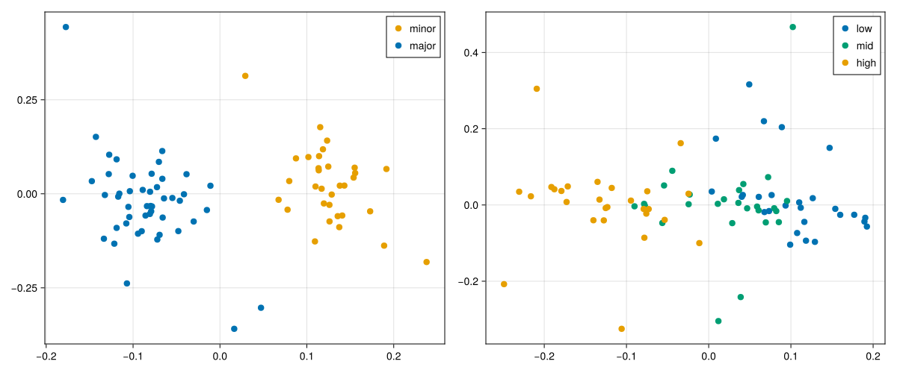
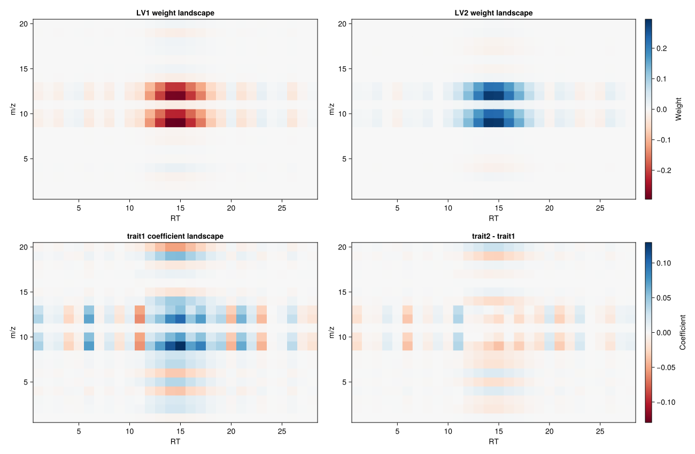
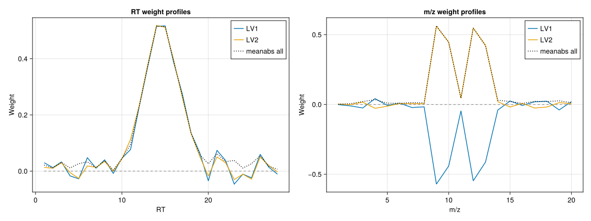

Visualization
Visualization in NCPLS happens at three different levels:
scoreplotshows how samples are arranged in the latent space.weightlandscapeandcoefficientlandscapemap fitted objects back onto the original predictor surface.weightprofileskeeps the multilinear mode weights separated, one profile per predictor axis.
This page uses Makie for static figures embedded in the manual and PlotlyJS for the interactive plot wrappers. scoreplot supports both backends. The dedicated landscape and profile plot wrappers currently use PlotlyJS only.
Example Data
The examples below reuse the synthetic multilinear dataset introduced on the Fit page. We fit one discriminant-analysis model for score plots and one multilinear regression model for the predictor-surface and weight-profile views.
using NCPLS
using CairoMakie
using PlotlyJS
using Statistics
data = synthetic_multilinear_hybrid_data(
nmajor=48,
nminor=32,
mode_dims=(28, 20),
orthogonal_truth=true,
integer_counts=false,
)
model_da = NCPLSModel(
ncomponents=2,
multilinear=true,
orthogonalize_mode_weights=false,
)
model_reg = NCPLSModel(
ncomponents=2,
multilinear=true,
orthogonalize_mode_weights=false,
)
mf_da = fit(
model_da,
data.X,
data.sampleclasses;
Yadd=data.Yadd,
obs_weights=data.obs_weights,
samplelabels=data.samplelabels,
predictoraxes=data.predictoraxes,
)
mf_reg = fit(
model_reg,
data.X,
data.Yprim_reg;
Yadd=data.Yadd,
obs_weights=data.obs_weights,
responselabels=data.responselabels_reg,
samplelabels=data.samplelabels,
sampleclasses=data.sampleclasses,
predictoraxes=data.predictoraxes,
)
blue, orange, green = Makie.wong_colors()[[1, 2, 3]]
trait1 = data.Yprim_reg[:, 1]
q1, q2 = quantile(trait1, [1 / 3, 2 / 3])
trait_bins = ifelse.(trait1 .<= q1, "low",
ifelse.(trait1 .<= q2, "mid", "high"))
rt_axis, mz_axis = predictoraxes(mf_reg)Score Plots
scoreplot has two main entry points:
scoreplot(mf)uses the stored sample labels, sample classes, and first two latent variables from a fitted model.scoreplot(samples, groups, scores)is the lower-level form for custom grouping or for plotting scores that were assembled outside the fitted-model convenience path.
NCPLS.scoreplot — Function
scoreplot(samples, groups, scores; backend=:plotly, kwargs...)
scoreplot(mf::NCPLSFit; backend=:plotly, kwargs...)Backend dispatcher for NCPLS score plots. Use backend=:plotly (default) for the PlotlyJS extension or backend=:makie for the Makie extension.
The dispatcher accepts backend-agnostic keywords and passes any remaining keywords to the selected backend. To avoid confusion, think of the keywords as belonging to three groups:
General (backend-agnostic)
backend::Symbol = :plotlySelect the backend. Supported values::plotly,:makie.
PlotlyJS backend keywords (PlotlyJSExtension)
group_order::Union{Nothing,AbstractVector} = nothingOrder of groups (also draw order; later is on top). Ifnothing, useslevels(groups)forCategoricalArray, elseunique(groups).default_trace = (;)PlotlyJS scatter kwargs applied to every group (except marker).group_trace::AbstractDict = Dict()Per-group PlotlyJS scatter kwargs.default_marker = (;)PlotlyJS marker kwargs for every group (keys must beSymbols).group_marker::AbstractDict = Dict()Per-group marker kwargs (keys must beSymbols).hovertemplate::AbstractString = "Sample: %{text}<br>Group: %{fullData.name}<br>LV1: %{x}<br>LV2: %{y}<extra></extra>"Hover text template. The default shows sample, group, LV1, LV2.layout::Union{Nothing,PlotlyJS.Layout} = nothingLayout object; ifnothing, a default layout is created usingtitle,xlabel, andylabel.plot_kwargs = (;)Extra kwargs passed toPlotlyJS.plot(e.g.,config).show_legend::Union{Nothing,Bool} = nothingIffalse, setsshowlegend=falsefor all traces.title::AbstractString = "Scores"xlabel::AbstractString = "Latent Variable 1"ylabel::AbstractString = "Latent Variable 2"
Makie backend keywords (MakieExtension)
group_order::Union{Nothing,AbstractVector} = nothingOrder of groups (also draw order).default_scatter = (;)Makie scatter kwargs applied to every group.group_scatter::AbstractDict = Dict()Per-group scatter kwargs.default_trace = (;)Additional scatter kwargs applied to every group (legacy convenience).group_trace::AbstractDict = Dict()Per-group scatter kwargs (legacy convenience).default_marker = (;)Marker-related kwargs applied to every group.group_marker::AbstractDict = Dict()Per-group marker kwargs.title::AbstractString = "Scores"xlabel::AbstractString = "Latent Variable 1"ylabel::AbstractString = "Latent Variable 2"figure = nothingProvide an existingFigureto draw into.axis = nothingProvide an existingAxisto draw into.figure_kwargs = (;)Extra kwargs passed toFigurewhen it is created.axis_kwargs = (;)Extra kwargs passed toAxiswhen it is created.show_legend::Bool = trueIftrue, callsaxislegend.legend_kwargs = (;)Extra kwargs passed toaxislegend.show_inspector::Bool = trueIftrue, enablesDataInspectoron GLMakie/WGLMakie.inspector_kwargs = (;)Extra kwargs passed toDataInspector.
Notes
- The dispatcher checks that the requested backend is loaded and errors with "Backend <pkg> not loaded" if not.
- Unknown backend values throw
error("Unknown backend"). scoresmust have at least two columns (LV1 and LV2).
The next figure shows both patterns. On the left, scoreplot(mf_da) uses the fitted DA model directly. On the right, the same plotting function is given explicit sample labels, custom groups, and the first two regression scores so that the samples are colored by trait bins rather than by class.
fig_scores = Figure(size=(1200, 500))
scoreplot(
mf_da;
backend=:makie,
figure=fig_scores,
axis=Axis(fig_scores[1, 1]),
title="DA scores by class",
group_order=["minor", "major"],
default_marker=(; markersize=12),
group_marker=Dict(
"minor" => (; color=orange),
"major" => (; color=blue),
),
show_inspector=false,
)
scoreplot(
data.samplelabels,
trait_bins,
xscores(mf_reg, 1:2);
backend=:makie,
figure=fig_scores,
axis=Axis(fig_scores[1, 2]),
title="Regression scores grouped by trait bins",
group_order=["low", "mid", "high"],
default_marker=(; markersize=12),
group_marker=Dict(
"low" => (; color=blue),
"mid" => (; color=green),
"high" => (; color=orange),
),
show_inspector=false,
)
save("visualization_scoreplots.svg", fig_scores)
The Plotly backend uses the same high-level call but produces an interactive score plot.
scoreplot_da_plotly = scoreplot(
mf_da;
backend=:plotly,
title="NCPLS DA scores",
group_order=["minor", "major"],
default_marker=(; size=10),
group_marker=Dict(
"minor" => (; color="rgb(230,159,0)"),
"major" => (; color="rgb(0,114,178)"),
),
)
PlotlyJS.savefig(scoreplot_da_plotly, "visualization_scoreplot.html")Open the interactive score plot
Predictor Surfaces
NCPLS stores fitted objects that still live on the predictor axes themselves. For a genuinely two-mode predictor, two views are especially useful:
weightlandscape(mf; lv=k)shows which regions of the predictor surface define one latent variable.coefficientlandscape(mf; response=j)orcoefficientlandscape(mf; response_contrast=(pos, neg))shows how the fitted model maps the predictor surface to one response or to a signed response contrast.
These are different objects. Weight landscapes are component objects on the predictor side. Coefficient landscapes are response objects derived from the cumulative fitted model. For fits with several responses, it is often clearer to request the response or contrast explicitly rather than relying on defaults.
NCPLS.weightlandscape — Function
weightlandscape(
mf::NCPLSFit;
lv::Union{Symbol, Integer}=1,
combine::Symbol=:sum,
)Return a 2D loading-weight landscape from a fitted NCPLS model.
lv = k::Integerreturns the component-specific loading-weight surfaceW[:, :, k].lv = :combinedor:allcombines all component surfaces according tocombine.
Supported combination rules are:
:sumfor a signed sum of the component surfaces.:meanfor a signed mean of the component surfaces.:sumabsfor the sum of absolute component weights.:meanabsfor the mean absolute component weight.
Because latent-variable signs are arbitrary, :sumabs or :meanabs are often more stable than signed combinations when inspecting all components together.
NCPLS.weightlandscapeplot — Function
weightlandscapeplot(mf; backend=:plotly, kwargs...)Backend dispatcher for NCPLS loading-weight landscape plots. The fit must describe exactly two predictor axes, either through stored predictoraxes metadata or implicitly through the returned weight surface.
General keywords
backend::Symbol = :plotlySelect the plotting backend. Supported values::plotly.lv::Union{Symbol,Integer} = 1Use an integer for one component or:combined/:allfor an aggregate across all stored components.combine::Symbol = :sumCombination rule forlv = :combined. Supported values::sum,:mean,:sumabs, and:meanabs.
PlotlyJS backend keywords
sample_size::Integer = 50_000iqr_multiplier::Real = 8.0clip_quantile::Real = 0.995colorscale::Union{Nothing,AbstractString} = nothingcolorbar_title::AbstractString = "Weight"hovertemplate::Union{Nothing,AbstractString} = nothingtitle::Union{Nothing,AbstractString} = nothinglayout = nothingplot_kwargs = (;)
NCPLS.coefficientlandscape — Function
coefficientlandscape(
mf::NCPLSFit;
lv::Union{Symbol, Integer}=:final,
response::Union{Nothing, Integer}=nothing,
response_contrast::Union{Nothing, Tuple{<:Integer, <:Integer}}=nothing,
)Return a 2D coefficient landscape from a fitted NCPLS model. The returned matrix is the requested predictor-surface view of the regression coefficients:
lv = :finalreturns the cumulative final model coefficients.lv = k::Integerreturns the isolated contribution of latent variablek, i.e.coef(mf, k) - coef(mf, k - 1)fork > 1.
When the fit has one response, that response is used automatically. When the fit has two responses and neither response nor response_contrast is provided, the default contrast is response 2 - response 1. For more than two responses, response or response_contrast = (positive, negative) must be supplied explicitly.
NCPLS.coefflandscapeplot — Function
coefflandscapeplot(mf; backend=:plotly, kwargs...)
landscapeplot(mf; backend=:plotly, kwargs...)Backend dispatcher for NCPLS coefficient-landscape plots. The fit must describe exactly two predictor axes, either through stored predictoraxes metadata or implicitly through the matrix returned by coefficientlandscape.
General keywords
backend::Symbol = :plotlySelect the plotting backend. Supported values::plotly.lv::Union{Symbol,Integer} = :finalUse:finalfor the cumulative fitted model or an integer to plot the isolated contribution of one latent variable.response::Union{Nothing,Integer} = nothingPlot one response surface directly.response_contrast::Union{Nothing,Tuple{Int,Int}} = nothingPlot a signed contrastpositive - negativebetween two responses.
PlotlyJS backend keywords
sample_size::Integer = 50_000Maximum number of coefficient values used when estimating the robust color range.iqr_multiplier::Real = 8.0Multiplier for the IQR fence used in the robust color range.clip_quantile::Real = 0.995High quantile ofabs.(coef)used as a lower bound on the clipping limit.colorscale::AbstractString = "RdBu"colorbar_title::AbstractString = "Coefficient"hovertemplate::Union{Nothing,AbstractString} = nothingtitle::Union{Nothing,AbstractString} = nothinglayout = nothingplot_kwargs = (;)
The figure below compares two latent-variable weight surfaces with two coefficient surfaces from the regression fit.
W_lv1 = weightlandscape(mf_reg; lv=1)
W_lv2 = weightlandscape(mf_reg; lv=2)
B_trait1 = coefficientlandscape(mf_reg; response=1)
B_contrast = coefficientlandscape(mf_reg; response_contrast=(2, 1))
weight_lim = maximum(abs.(vcat(vec(W_lv1), vec(W_lv2))))
coef_lim = maximum(abs.(vcat(vec(B_trait1), vec(B_contrast))))
fig_surfaces = Figure(size=(1300, 850))
ax_w1 = Axis(
fig_surfaces[1, 1],
title="LV1 weight landscape",
xlabel=rt_axis.name,
ylabel=mz_axis.name,
)
heatmap!(
ax_w1,
rt_axis.values,
mz_axis.values,
W_lv1;
colormap=:RdBu,
colorrange=(-weight_lim, weight_lim),
)
ax_w2 = Axis(
fig_surfaces[1, 2],
title="LV2 weight landscape",
xlabel=rt_axis.name,
ylabel=mz_axis.name,
)
heatmap!(
ax_w2,
rt_axis.values,
mz_axis.values,
W_lv2;
colormap=:RdBu,
colorrange=(-weight_lim, weight_lim),
)
ax_b1 = Axis(
fig_surfaces[2, 1],
title="$(data.responselabels_reg[1]) coefficient landscape",
xlabel=rt_axis.name,
ylabel=mz_axis.name,
)
heatmap!(
ax_b1,
rt_axis.values,
mz_axis.values,
B_trait1;
colormap=:RdBu,
colorrange=(-coef_lim, coef_lim),
)
ax_bc = Axis(
fig_surfaces[2, 2],
title="$(data.responselabels_reg[2]) - $(data.responselabels_reg[1])",
xlabel=rt_axis.name,
ylabel=mz_axis.name,
)
heatmap!(
ax_bc,
rt_axis.values,
mz_axis.values,
B_contrast;
colormap=:RdBu,
colorrange=(-coef_lim, coef_lim),
)
Colorbar(
fig_surfaces[1, 3],
limits=(-weight_lim, weight_lim),
colormap=:RdBu,
label="Weight",
)
Colorbar(
fig_surfaces[2, 3],
limits=(-coef_lim, coef_lim),
colormap=:RdBu,
label="Coefficient",
)
save("visualization_surfaces.svg", fig_surfaces)
The interactive plot wrappers build these views directly from the fitted model. For combined weight summaries across all components, absolute combinations such as combine=:meanabs are often easier to interpret than signed sums because latent-variable signs are arbitrary.
weight_plotly = weightlandscapeplot(
mf_reg;
lv=:combined,
combine=:meanabs,
title="Combined weight landscape (meanabs)",
)
coef_plotly = coefflandscapeplot(
mf_reg;
response_contrast=(2, 1),
title="Coefficient landscape: trait2 - trait1",
)
PlotlyJS.savefig(weight_plotly, "visualization_weight_landscape.html")
PlotlyJS.savefig(coef_plotly, "visualization_coefficient_landscape.html")Open the interactive combined weight landscape
Open the interactive coefficient landscape
Multilinear Weight Profiles
When multilinear=true, NCPLS also stores one loading-weight vector per predictor mode and per component. weightprofiles returns those vectors directly, whereas weightprofilesplot stacks them into one Plotly figure with one subplot per predictor axis.
This view is often easier to interpret than a 2D surface when the main question is how each individual mode contributes across its own coordinate system.
NCPLS.weightprofiles — Function
weightprofiles(
mf::NCPLSFit;
lv::Union{Symbol, Integer}=1,
combine::Symbol=:sum,
)Return the multilinear loading-weight vectors stored in W_modes.
lv = k::Integerreturns the per-axis vectors for latent variablek.lv = :combinedor:allcombines the per-axis vectors across all components usingcombine.
Supported combination rules are :sum, :mean, :sumabs, and :meanabs.
NCPLS.weightprofilesplot — Function
weightprofilesplot(mf; backend=:plotly, kwargs...)Backend dispatcher for NCPLS multilinear weight-profile plots. These plots require a multilinear fit with stored W_modes.
General keywords
backend::Symbol = :plotlySelect the plotting backend. Supported values::plotly.lv::Union{Symbol,Integer} = 1Use an integer for one component or:combined/:allfor an aggregate across all stored components.combine::Symbol = :sumCombination rule forlv = :combined. Supported values::sum,:mean,:sumabs, and:meanabs.
PlotlyJS backend keywords
title::Union{Nothing,AbstractString} = nothinglayout = nothingline_kwargs = (;)zero_line::Bool = trueplot_kwargs = (;)
Here we compare the mode-specific profiles for LV1 and LV2 and add a combined absolute summary across all stored components.
profiles_lv1 = weightprofiles(mf_reg; lv=1)
profiles_lv2 = weightprofiles(mf_reg; lv=2)
profiles_all = weightprofiles(mf_reg; lv=:combined, combine=:meanabs)
fig_profiles = Figure(size=(1200, 450))
for (j, axis_meta) in enumerate(data.predictoraxes)
ax = Axis(
fig_profiles[1, j],
title="$(axis_meta.name) weight profiles",
xlabel=axis_meta.name,
ylabel="Weight",
)
lines!(
ax,
axis_meta.values,
zeros(length(axis_meta.values));
color=:gray60,
linestyle=:dash,
)
lines!(ax, axis_meta.values, profiles_lv1[j], color=blue, label="LV1")
lines!(ax, axis_meta.values, profiles_lv2[j], color=orange, label="LV2")
lines!(
ax,
axis_meta.values,
profiles_all[j];
color=:black,
linestyle=:dot,
label="meanabs all",
)
axislegend(ax, position=:rt)
end
save("visualization_weightprofiles.svg", fig_profiles)
profiles_plotly = weightprofilesplot(
mf_reg;
lv=:combined,
combine=:meanabs,
title="Combined weight profiles (meanabs)",
)
PlotlyJS.savefig(profiles_plotly, "visualization_weightprofiles.html")Open the interactive weight profiles